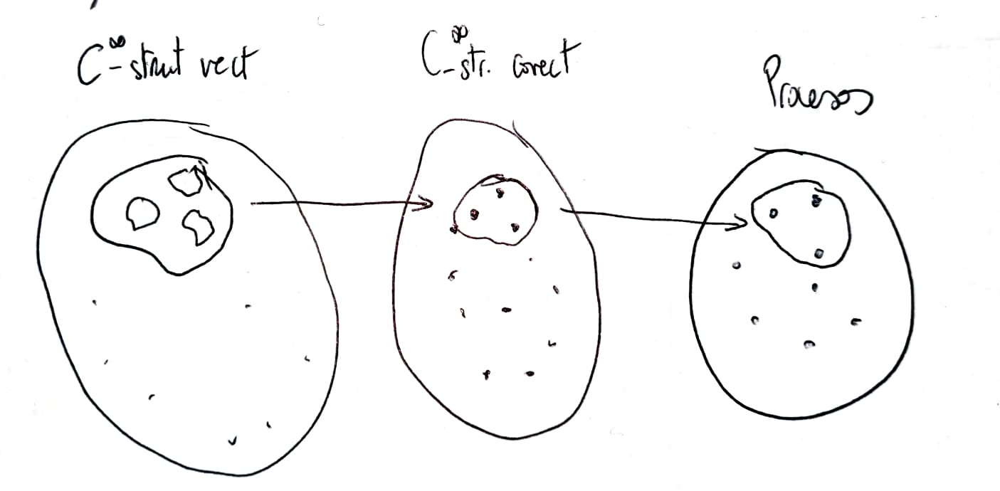

Let $\mathcal{Z}$ be a distribution. For the moment, let's call $\mathcal{C}^{\infty}$-structure to an ordered collections $\langle X_1,\ldots,X_{n-r} \rangle$ that satisfies the requirements. And let's call, for the moment, $\mathcal{C}^{\infty}$-structure of 1-forms to an ordered collection of 1-forms satisfying conditions
1. $\mathcal{Z}^* =\mathcal{S}\left( \{\omega_{1},\ldots, \omega_{n-r} \}\right)$.
2. $\mathcal{I}(\{\omega_{k},\ldots, \omega_{n-r}\})$ is a differential ideal for $k=1,\ldots, n-r$.
Lo que está ocurriendo es que dada una $\mathcal{C}^{\infty}$-structure vectorial hay varias $\mathcal{C}^{\infty}$-structures of 1-forms que verifican
$$ \mathcal{S}\left( \mathcal{X}_{k} \right)^*=\mathcal{S}\left( \Lambda_{k} \right),\quad\mbox{for}\quad 1\leq k\leq n-r-1. $$Y recíprocamente, dada una $\mathcal{C}^{\infty}$-structure of 1-forms, hay varias de las que pueden provenir.
¿Todas llevan al mismo proceso de integración? Entendiendo como tal que tenemos que resolver las mismas Pfaffian equations, aunque quizás con distintos factores integrantes (en último término serían las mismas ecuaciones, porque sacaríamos factor común y despejaríamos).
Veamos:

IDEA PARA FORMALIZARLO: Decir que vamos a decir que dos $\mathcal{C}^{\infty}$-structures son compatibles si generan la misma cadena de distribuciones. Lo mismo para las $\mathcal{C}^{\infty}$-structures of 1-forms. Si tomamos clases de equivalencia la relación es 1-to-1.
Las clases de equivalencia, tienen algo que ver con las flags? Serían algo así como un campo de smooth flags.
Y con las flag manifolds? En cada punto de nuestra variedad tenemos un espacio vectorial $T_pM$, y por tanto una flag manifold. Tendríamos un fibrado en $M$ en el que cada fibra es una flag manifold. Un "proceso de integración" es una sección de ese fibrado. Localmente siempre existen, de hecho siempre existen estructuras resolubles. La existencia de secciones globales debe tener algo que ver con la topología de ese fribrado. Podría esto usarse para decir cosas de la existencia de soluciones globales de ODEs y PDEs importantes?
Let $\mathcal{Z}=\mathcal{S}(\{Z_1,\ldots,Z_r\})$ be an involutive distribution. Given a quasi-solvable structure $\langle X_1,\ldots, X_{n-r}\rangle$ for $\mathcal{Z}$, there exists an ordered collection of pointwise linearly independent 1-forms $\langle \omega_1,\ldots, \omega_{n-r}\rangle$ related to it by means of $\mathcal{S}\left( \mathcal{X}_{k} \right)^* =\mathcal{S}\left( \{\omega_{k+1},\ldots, \omega_{n-r} \}\right)$ for $k=1,\ldots, n-r$ and satisfying:
1. $\mathcal{Z}^* =\mathcal{S}\left( \{\omega_{1},\ldots, \omega_{n-r} \}\right)$.
2. $\mathcal{I}(\{\omega_{k},\ldots, \omega_{n-r}\})$ is a differential ideal for $k=1,\ldots, n-r$.
Conversely, an ordered collection of 1-forms $\langle \omega_1,\ldots, \omega_{n-r}\rangle$ satisfying conditions 1 and 2 above gives rise to a quasi-solvable structure $\langle X_1,\ldots, X_{n-r}\rangle$ for $\mathcal{Z}$ such that $\mathcal{S}\left( \mathcal{X}_{k} \right)^* =\mathcal{S}\left( \{\omega_{k+1},\ldots, \omega_{n-r} \}\right)$ for $k=1,\ldots, n-r$.
Proof
Since $\{Z_1,\ldots,Z_r,X_1,\ldots,X_{n-r}\}$ are, pointwise, linearly independent vectors on $M$, they constitute a frame and therefore we can construct the associated dual coframe (see [Olver 1995] chapter 8)
$$ \{\zeta_1,\ldots,\zeta_r,\omega_1,\ldots, \omega_{n-r}\}. $$The 1-forms $\{\omega_1,\ldots, \omega_{n-r}\}$ are pointwise linearly independent and we can check that they satisfy the stated conditions. The first one is trivial if we take into account that $\{Z_1,\ldots,Z_r,X_1,\ldots,X_{n-r}\}$ and $\{\zeta_1,\ldots,\zeta_r,\omega_1,\ldots, \omega_{n-r}\}$ are dual basis.
For the second one, observe that $\mathcal{I}(\{\omega_{k+1},\ldots, \omega_{n-r}\})$ must be a differential ideal for every $k=1,\ldots,n-r-1$, since every $\mathcal{S}\left( \mathcal{X}_k \right)$ is, by remark involutive.
Now, suppose we have a collection of 1-forms $\langle \omega_1,\ldots, \omega_{n-r}\rangle$ satisfying the above conditions. We can find a quasi-solvable structure for $\mathcal{Z}$ by extending $\{Z_1,\ldots,Z_r\}$ to a frame:
$$ \{Z_1,\ldots,Z_r,\widetilde{X}_1,\ldots, \widetilde{X}_{n-r}\}, $$and taking the dual coframe
$$ \{\zeta_1,\ldots,\zeta_r,\widetilde{\omega}_1,\ldots, \widetilde{\omega}_{n-r}\}. $$Since $\operatorname{span}(\{ \widetilde{\omega}_{1p}\ldots,\widetilde{\omega}_{n-rp} \})=\operatorname{span}(\{ {\omega}_{1p}\ldots,{\omega}_{n-rp} \})$ for every $p\in M$ we can replace each $\widetilde{\omega}_i$ by $\omega_i$ and the set
$$ \{\zeta_1,\ldots,\zeta_r,{\omega}_1,\ldots, {\omega}_{n-r}\} $$will be also a coframe. By taking duals again, we obtain the frame
$$ \{Z_1,\ldots,Z_r,{X}_1,\ldots, {X}_{n-r}\}, $$and $\langle X_1,\ldots, X_{n-r}\rangle$ is the required quasi-solvable structure, since $\mathcal{S}(\{Z_1,\ldots,Z_r,{X}_1,\ldots, {X}_{k}\})$ is involutive because $\mathcal{I}(\{\omega_{k+1},\ldots, \omega_{n-r}\})$ is a differential ideal ($k=0, \ldots,n-r$).
________________________________________
________________________________________
________________________________________
Author of the notes: Antonio J. Pan-Collantes
INDEX: